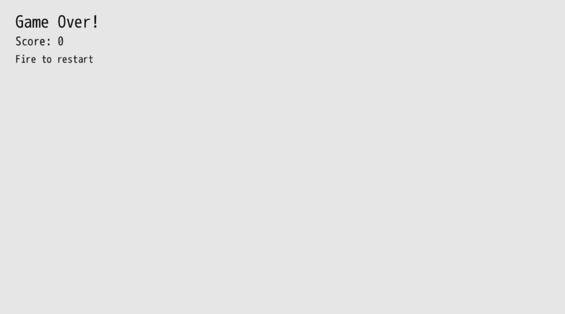
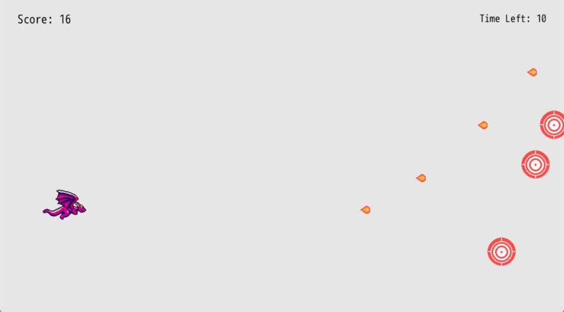

Time Attack
We’ve almost got a game. But we need some way for the game to end. A lot of game loops end with the player’s character dying, where they respawn or start over again. Other game loops end when the player reaches the end of a level.
For our simple game, let’s add a 30-second timer that counts down. The objective of our game will be to see how many targets the player can hit in that time window. Let’s call our game Target Practice. Every dragon needs some practice before they head out into battle, right?
Adding a timer to our game introduces a few new concepts we’ll build out in this chapter:
- Keeping track of time and displaying it
- Stopping our game when the timer runs out
- Displaying a Game Over screen with the score
- Allowing the player to restart the game and play again
Getting It Working
We’ll start by introducing args.state.timer that will be used to keep track of how much time remains.
args.state.score ||= 0
args.state.timer ||= 30 * 60
args.state.timer -= 1
We lazily set it to 30 * 60. We want the game to last thirty seconds and our #tick method runs sixty times every second, so we multiply them together to get the total number of ticks our timer will run for. We’ll then subtract one from args.state.timer every #tick so that it decreases as we play our game.
Right below decreasing our args.state.timer by one, we check to see if the timer is less than zero. If it is, that means game over.
args.state.timer -= 1
if args.state.timer < 0
labels = []
labels << {
x: 40,
y: args.grid.h - 40,
text: "Game Over!",
size_px: 42,
}
labels << {
x: 40,
y: args.grid.h - 90,
text: "Score: #{args.state.score}",
size_px: 30,
}
labels << {
x: 40,
y: args.grid.h - 132,
text: "Fire to restart",
size_px: 26,
}
args.outputs.labels << labels
if args.inputs.keyboard.key_down.z ||
args.inputs.keyboard.key_down.j ||
args.inputs.controller_one.key_down.a
DR.reset
end
return
end
If it is game over, then we let the player know, display their final score, and tell them how to play again (by pressing the fire button). We make an array of labels which we then push into args.outputs.labels to efficiently render them all.
If any of our fire keys are pressed, the game is reset with DR.reset, and the player can play again.
The return line is really important. It says, return out of the #tick method so that none of the code below runs. We don’t want to have the dragon be movable or for targets to spawn when it’s game over. So we eject early and only display the game over screen details.

Way at the bottom of #tick, let’s display a label with the time remaining:
labels = []
labels << {
x: 40,
y: args.grid.h - 40,
text: "Score: #{args.state.score}",
size_px: 30,
}
labels << {
x: args.grid.w - 40,
y: args.grid.h - 40,
text: "Time Left: #{(args.state.timer / 60).round}",
size_px: 26,
anchor_x: 1,
}
args.outputs.labels << labels
We use the same pattern of creating a labels array, pushing in the player’s score and the time, in ticks, remaining. In order to display the time remaining as seconds, we divide it by 60 and round. We do the opposite of what we did when we set the total time in ticks.
The anchor_x: 1 lets us specify that we want the text to be right-aligned (anchored at the right edge of the label) instead of the default left alignment. This lets us nicely position our timer in the upper right corner of the game.

We’ve got ourselves a game that we can start, finish, and replay. Isn’t that pretty awesome?
Restart Grace Period
If you happen to press the fire button right when the timer runs out, you may restart your game without even seeing the game over screen. Let’s add a little grace period between when the game is over and when we start accepting input to restart. 30 frames should be plenty and it won’t even be noticeable to the player.
if args.state.timer < -30 &&
(args.inputs.keyboard.key_down.z ||
args.inputs.keyboard.key_down.j ||
args.inputs.controller_one.key_down.a)
DR.reset
end
Because we keep subtracting from args.state.timer, we can check to see if the current value is less than -30. If it is, then we’ll accept input to restart the game.
&& (double ampersand, often read as “and-and”) means that both sides of the expression must be true for the code within the conditional to happen. In our new restart check, we combine AND and OR by saying: if the game timer is less than -30 AND any of our fire keys are down, then we reset the game. When you group together expressions in parentheses, (monday? || tuesday?), it evaluates them as one expression against the other checks. We care about the timer being below a certain amount AND any of the inputs being pressed.
Combining logic in this way for flow control is very common when making games. && and || are pretty common operators in most programming languages.
Refactor
Our main #tick method is getting a bit long in the tooth, being over 100 lines long. We’ve also duplicated two things: frames per second with the 60 value and checking for fire input. This is a good opportunity to refactor our code once again to make it easier to work with. Let’s break up #tick into a series of smaller methods that we call from within it. Encapsulating our logic into smaller pieces makes it easier to work on those smaller pieces without concerning ourselves with the rest of the code.
How small should you make your methods? That’s up to you. Use your best judgment and do what feels right. Code can change and grow quite organically. Once something feels too big or complex or is duplicated, improve it. Don’t over-engineer your game right from the start, otherwise, you’ll be off in the weeds and not actually making your game fun. On the other hand, if you just neglect your code, you’ll make it more difficult to change, thus slowing down the development process. There’s a fine line between over-engineering and creating a mess.
Here’s the entire game broken down into some smaller methods to make it easier to work with moving forward:
FPS = 60
def spawn_target(args)
size = 64
{
x: rand(args.grid.w * 0.4) + args.grid.w * 0.6,
y: rand(args.grid.h - size * 2) + size,
w: size,
h: size,
path: 'sprites/target.png',
}
end
def fire_input?(args)
args.inputs.keyboard.key_down.z ||
args.inputs.keyboard.key_down.j ||
args.inputs.controller_one.key_down.a
end
def handle_player_movement(args)
if args.inputs.left
args.state.player.x -= args.state.player.speed
elsif args.inputs.right
args.state.player.x += args.state.player.speed
end
if args.inputs.up
args.state.player.y += args.state.player.speed
elsif args.inputs.down
args.state.player.y -= args.state.player.speed
end
if args.state.player.x + args.state.player.w > args.grid.w
args.state.player.x = args.grid.w - args.state.player.w
end
if args.state.player.x < 0
args.state.player.x = 0
end
if args.state.player.y + args.state.player.h > args.grid.h
args.state.player.y = args.grid.h - args.state.player.h
end
if args.state.player.y < 0
args.state.player.y = 0
end
end
def game_over_tick(args)
labels = []
labels << {
x: 40,
y: args.grid.h - 40,
text: "Game Over!",
size_px: 42,
}
labels << {
x: 40,
y: args.grid.h - 90,
text: "Score: #{args.state.score}",
size_px: 30,
}
labels << {
x: 40,
y: args.grid.h - 132,
text: "Fire to restart",
size_px: 26,
}
args.outputs.labels << labels
if args.state.timer < -30 && fire_input?(args)
DR.reset
end
end
def tick args
args.state.player ||= {
x: 120,
y: 280,
w: 100,
h: 80,
speed: 12,
path: 'sprites/misc/dragon-0.png',
}
args.state.fireballs ||= []
args.state.targets ||= [
spawn_target(args), spawn_target(args), spawn_target(args)
]
args.state.score ||= 0
args.state.timer ||= 30 * FPS
args.state.timer -= 1
if args.state.timer < 0
game_over_tick(args)
return
end
handle_player_movement(args)
if fire_input?(args)
args.state.fireballs << {
x: args.state.player.x + args.state.player.w - 12,
y: args.state.player.y + 10,
w: 32,
h: 32,
path: 'sprites/fireball.png',
}
end
args.state.fireballs.each do |fireball|
fireball.x += args.state.player.speed + 2
if fireball.x > args.grid.w
fireball.dead = true
next
end
args.state.targets.each do |target|
if args.geometry.intersect_rect?(target, fireball)
target.dead = true
fireball.dead = true
args.state.score += 1
args.state.targets << spawn_target(args)
end
end
end
args.state.targets.reject! { |t| t.dead }
args.state.fireballs.reject! { |f| f.dead }
args.outputs.sprites << [args.state.player, args.state.fireballs, args.state.targets]
labels = []
labels << {
x: 40,
y: args.grid.h - 40,
text: "Score: #{args.state.score}",
size_px: 30,
}
labels << {
x: args.grid.w - 40,
y: args.grid.h - 40,
text: "Time Left: #{(args.state.timer / FPS).round}",
size_px: 26,
anchor_x: 1,
}
args.outputs.labels << labels
end
DR.reset
Because so much has changed and shifted around, I’ll just walk through the main changes:
FPSis a constant, which is a special value in Ruby that doesn’t change. We assign it to60because our game runs at sixty (f)rames (p)er (s)econd. That value won’t change, but it’s more helpful in our math code to seeFPSrather than60because we now know what that value represents.#fire_input?checks to see if any of our keys are down for firing a fireball. By using our method, we can easily adjust it without having to change it for both restarting the game and the dragon spitting the fireball.#handle_player_movementdoes just what it describes. That code has a lot of checks but we haven’t changed much, so let’s put it in a method to get it out of the way.#game_over_tickis our own special method for when it’s game over that gets called from our main#tick. It makes it easier to refer to and change what happens when our game is over.
I hear you over there screaming, “You expect me to rewrite the entire game line-by-line?!?! I quit!” It’s okay to copy and paste what’s provided above into your game. If you’ve made some adjustments, make them again. This refactored code is going to be the foundation for the rest of the book.
What’s Next
We’ve got a working game, but it’s a bit… boring. Let’s polish our game up by adding high-score tracking, sounds, animations, and more. We’ve got a working core of a fun game, and now it’s time to make it a great experience.